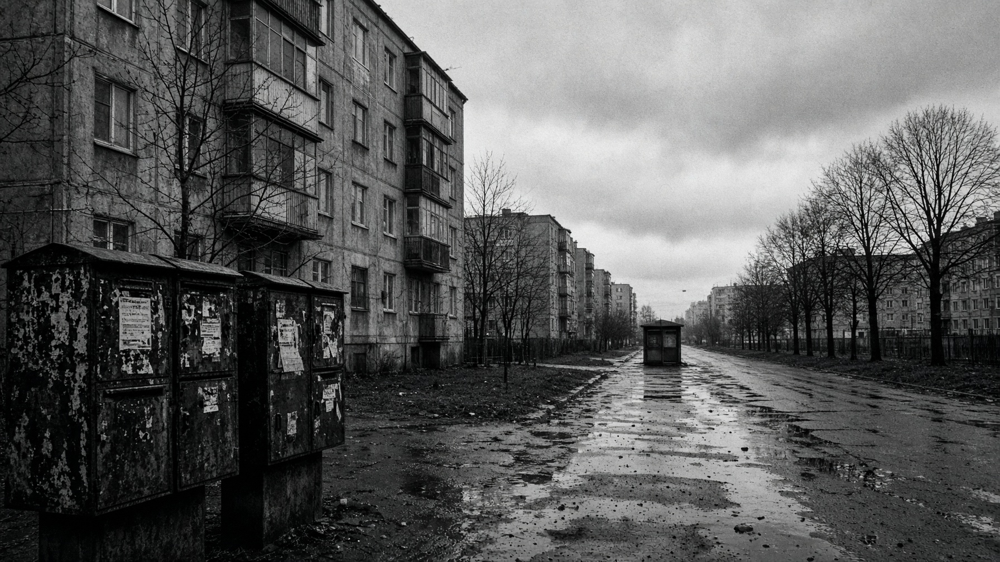
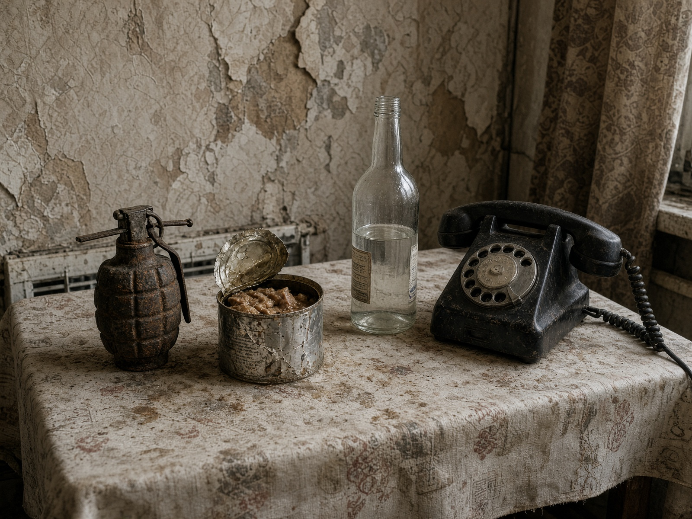
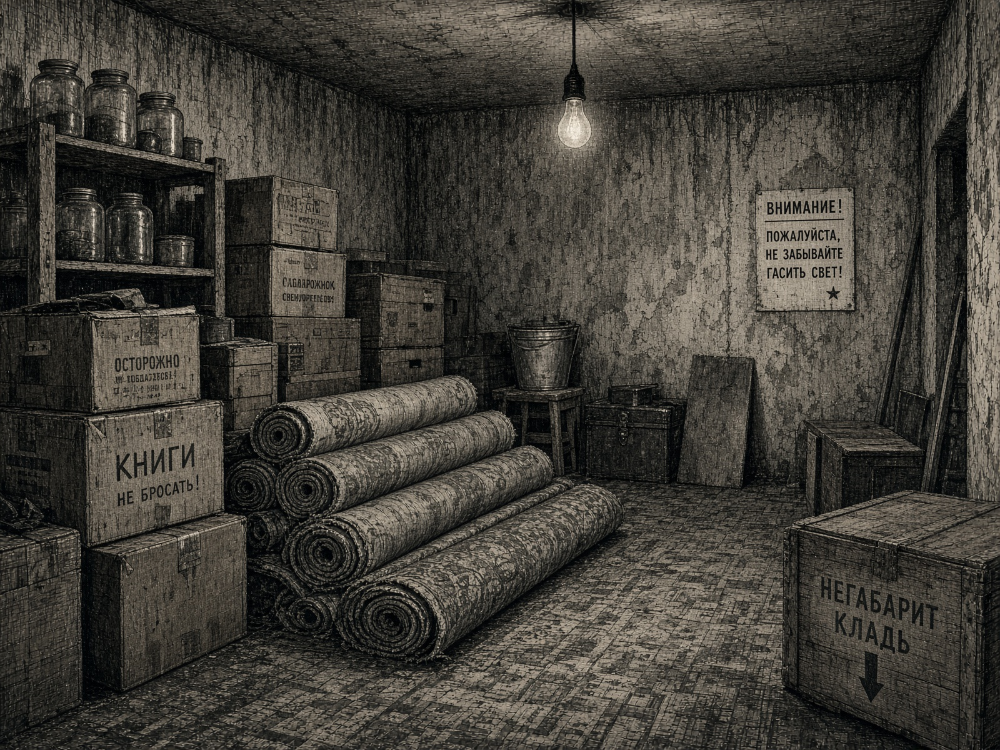
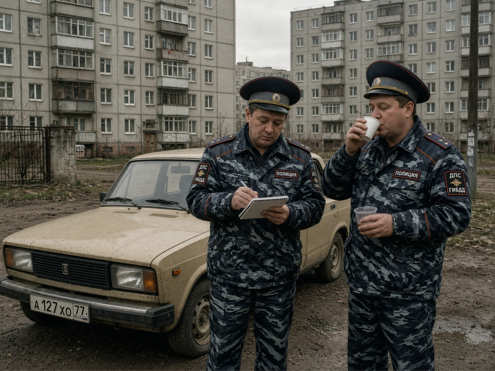
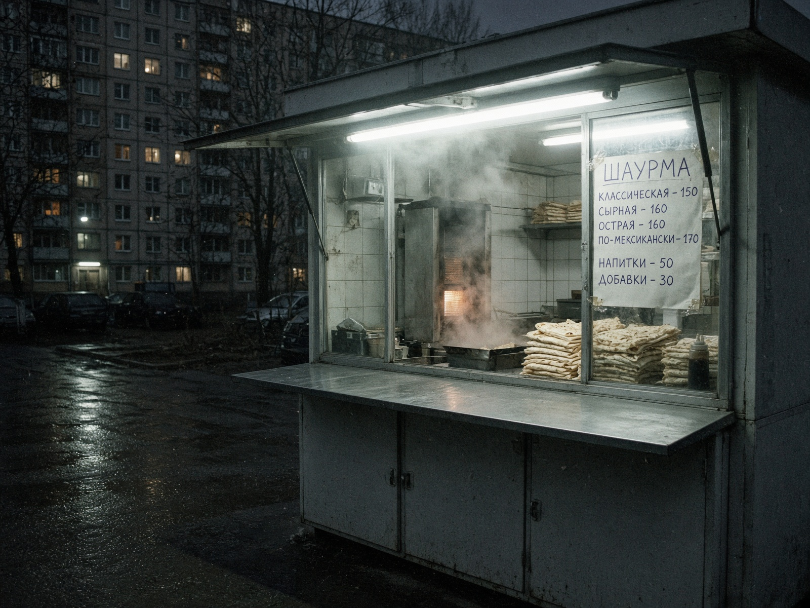
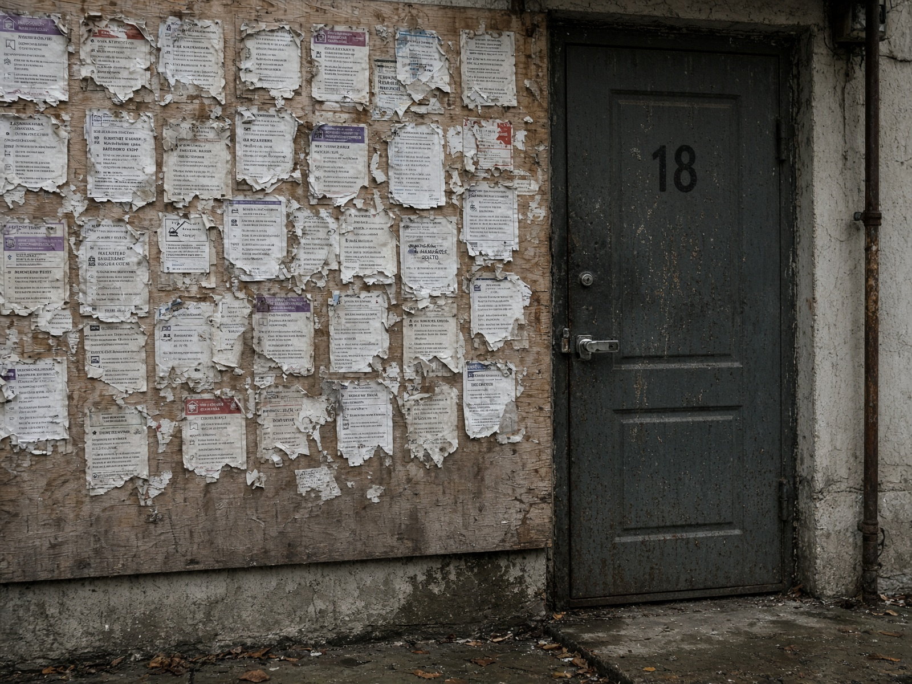
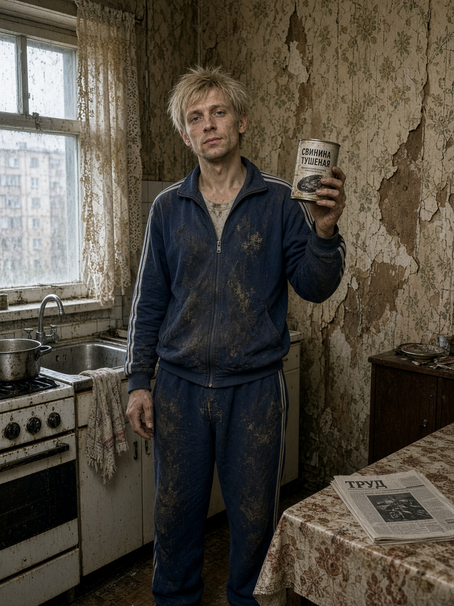
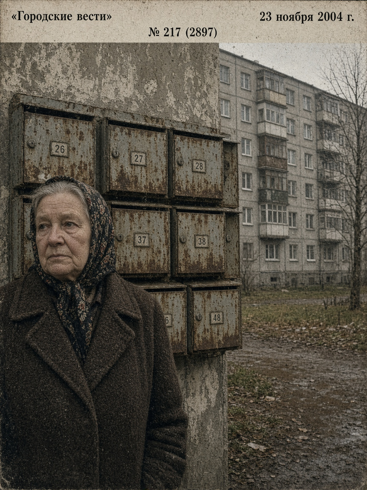

На улице Шотмана ночью пахло лавашем и порохом. Жители третьего подъезда клянутся: «это Юрец». Юрец клянётся: «это история».

Улица Шотмана, ноябрь. Снимок нашего внештатного фотографа, который вышел за кефиром и не вернулся до обеда.
На 23:40 из окна третьего этажа донёсся крик: «Я — император, а лаваш мне должен!» Через минуту во дворе нашли обёртку «шаверма классик», в которой, по словам очевидцев, «что-то металлическое стучало, как сердце района».
Участковый Сергей Петрович уточнил: «Снаряд времён ВОВ. Учебный. Наверное. Мы его забрали чайком запить».
Сам Юрец, 31 год, трешка, кнопочный Fly, на вопрос редакции ответил с балкона: «Это не граната. Это скипетр. Шаверма — дань. Вы все — холопы без капусты».
Тираж этого номера увеличен на 40 экземпляров. Киоск у 18-го дома закрылся раньше: продавец ушёл проверять, не звенит ли его собственный лаваш.

Сервант жителя. Редакция просит не повторять сервировку дома.
По версии Юрца, гранаты, тушёнка и дисковый телефон — «стратегический запас императора на случай буржуев». По версии Зинаиды с пятого, это «чтобы НЛО не село на крышу зря».

Подвал 18-го дома. Линолеум знает больше, чем участковый.
«Он орёт в три ночи, что шаверма должна. Шаверма молчит. Значит, должна», — Валера, 2-й этаж.
«Склад? У нас в подвале тоже склад. Там банки 1984 года. Юрец просто честнее», — тётя Галя.
«Пусть орёт. Лишь бы лифт ездил. Лифт не ездит», — аноним из 7-го.
Сводка
За неделю: 14 криков «я легенда», 3 вызова в ларёк, 1 учебный снаряд, 0 интернета. Район держится.

Слева направо: ст. лейтенант Безруков и младший, который держит чай. Чай казённый. Нервы — свои.
Эксклюзивное интервью у «Жигулей». Диктофон сел на второй минуте. Дальше писали ручкой.
— Юрец опасен? — «Он орёт. Орёж не статья. Статья будет, если граната окажется не учебной. Пока она учебная. Мы проверили языком. В смысле — инструкцией».
— Шаверма? — «Ели. Нормальная. Капуста есть. Взрывчатки в соусе не нашли. Соус подозрительный, но это уже Роспотребнадзор».
— Интернет у него есть? — «Зачем? Он и без интернета знает, что он император. Мы завидуем. Тихо».
На прощание младший попросил не писать фамилию. Мы и не знали.

Лаваш. Капуста. Легенда. Без гранат — с 8 утра. С гранатами — по записи.
90 ₽ · двор, киоск, не моргнуть
Срок годности — понятие буржуазное. Открывается ложкой или характером.
Только сегодня! Дисковый телефон «Царь-трубка» и рулон линолеума «Дуб кремлёвский». Звоните, пока сосед не занял линию.
Три платежа. Первый — тушёнкой. Второй — криком. Третий — забудьте.
Водка, сигареты, советы. Советы дороже.
Редакция не несёт ответственности, если яхта из линолеума не всплывёт. Яхта и не должна.


Наш эксперт. Титул — самопровозглашённый. Стаж — с похмелья.
Если соседу должны — не ходите в суд. Купите ему лаваш без капусты. Капуста — уже ультиматум.
Не от рептилоидов. От сквозняка. Рептилоиды и так знают, где вы.
Против часовой — Зинаида. По часовой — Светлана. Если никто не берёт — вы император, вам и не надо.
Под подушкой — нельзя. В лаваше — нельзя. В серванте рядом с тушёнкой — традиция района. Редакция против. Район — за.
5. Интернет не проводить. Он портит «Радугу». «Радуга» и так шипит, как правда.
Приходит Юрец в шаверму:
— Мне без капусты, с империей.
— Империи нет.
— Тогда с гранатой.
— Учебной?
— Я тоже учебный.
Звонит Светлана. Юрец орёт в диск:
— Алло, богиня!
— Это справочная.
— Значит, богиня занята. Передайте: яхта из линолеума уже плывёт.
Лысый хер говорит:
— Юра, ты уволен.
— Я не Юра. Я фараон.
— Тогда фараон уволен. Линолеум остаётся.
Встречаются два участковых.
— Что сегодня?
— Опять Юрец.
— Статья?
— Пока жанр. Комедийная сага.
Бабка Зинаида смотрит «Радугу»:
— Опять помехи.
Помехи отвечают:
— Это не помехи. Это план.
Костя купил BMW. Юрец купил тушёнку.
Через год у Кости кредит, у Юрца империя. Считайте сами, кто выиграл. Редакция считает Юрца. Редакция тоже пила.
По горизонтали: 1. Император без Wi‑Fi. 3. Еда, которая должна. 5. Улица. 7. Телевизор.
По вертикали: 2. Учебный аргумент. 4. Богиня, которую никто не видел. 6. Строймаг. 8. То, что в банке.
Ответы в следующем номере. Следующий номер — когда Юрец перестанет орать. То есть никогда. Ответы: ЮРЕЦ, ШАВЕРМА, ГРАНАТА, СВЕТКА, ШОТМАН, РАДУГА, ОЛИМПИК, ТУШЁНКА, ЛАРЁК.

Тётя из 18-го проверяет почтовый ящик. Газеты нет — значит, украли. Газета есть — значит, опять Юрец.
Туман. Перегар. +2°. Ветер с помойки. Давление как у участкового после смены. Осадки: иногда лаваш.
Кто найдёт — не надо. Император просил не искать.
Дорого. Без капусты. С историей.